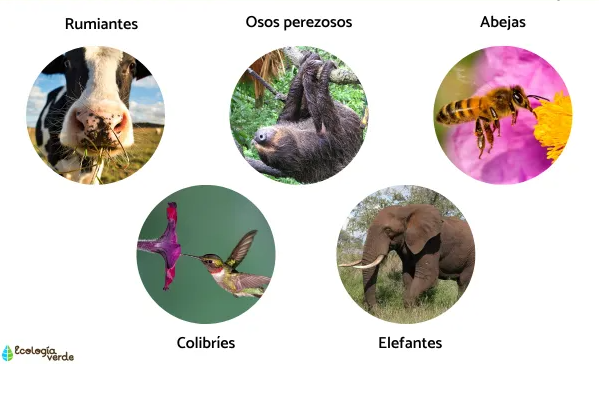
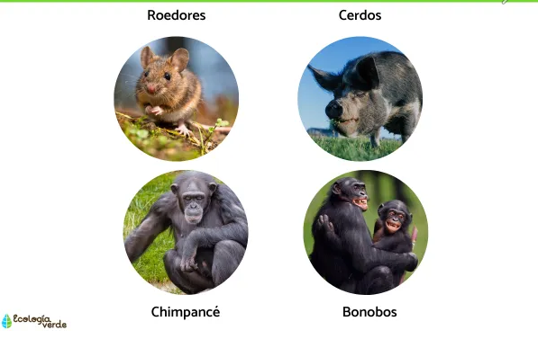
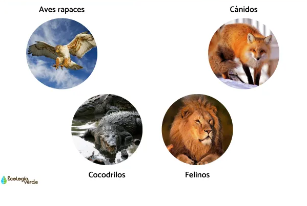

Contenido
Características principales de los animales
Encontramos las siguientes:
- Sus células pueden estar organizadas de tipo pluricelular o eucariota.
- Son seres heterótrofos por ingestión, es decir, que su aspecto nutricional varía de un animal a otro.
- Los animales poseen un metabolismo anaeróbico, esto quiere decir que necesitan respirar oxígeno para poder vivir.
- Otra de las características generales de los animales es que tienen la capacidad de reproducirse, por tal razón, existe un animal macho y una hembra.
- Los animales también son seres simétricos. Esto quiere decir que cuentan con una disposición general de cada una de sus partes o estructuras del cuerpo a lo largo de sus ejes corporales. La simetría de los animales puede ser de tipo radial o bilateral.
Igualmente, la gran mayoría de los animales cuentan con músculos y un sistema nervioso que les envía y procesa señales por todo el cuerpo. Sin embargo, algunas especies, como las esponjas, carecen de estos.
Los animales también se caracterizan por desarrollar funciones vitales como: reproducción, movimiento, excreción, respiración, circulación, alimentación y movimiento.
Clasificación de los animales
Los animales pueden tener o no una columna vertebral. Por ejemplo, las especies que tienen columna vertebral son conocidos como vertebrados, mientras que los que no la tienen, se conocen como invertebrados.
Animales vertebrados
Las especies de animales vertebrados se caracterizan, por tener una columna vertebral y por contar con una estructura ósea. Las partes de su cuerpo se componen y definen por extremidades, tronco y cabeza. Muchos de ellos, también cuentan con una cola.
De igual forma, suelen tener tanto la piel como el cuerpo cubierto, ya sea por pelaje (animales terrestres), plumas (aves) o escamas (peces y algunas especies de reptiles). Por su parte, los anfibios se presentan con la piel desnuda.
Según estimaciones, alrededor de 62 mil especies de animales vertebrados existen en la actualidad. Este tipo de animales están divididos en cinco grupos: anfibios, mamíferos, reptiles, peces y aves.
Animales Invertebrados
Al contrario de los animales vertebrados, las especies de animales invertebrados se identifican por no contar con una estructura ósea, es decir, columna vertebral. Muchos de estos ejemplares son pequeños, y disponen de caparazones o conchas para protegerse de los depredadores. Son mayormente vulnerables en comparación a otros animales. Al no contar con una estructura ósea, es complicado identificar las partes de su cuerpo.
También presentan una estructura externa que se conoce como exoesqueleto.
Otra de las características más destacables de este tipo de animales, es que han tenido la capacidad de adaptarse a diferentes medios de vida. Pueden vivir en medios submarinos y en grandes alturas. Este grupo de animales abarca miles de especies como: moluscos, artrópodos, anélidos, cnidarios, equinodermos y poríferos.
Clasificación de los animales según su alimentación
Existen tres formas de alimentación primarias en las que podemos diferenciar y clasificar a los animales: herbívoros, carnívoros y omnívoros.
Animales herbívoros

Son aquellos que tienen como dieta principal las plantas, hierbas, vegetales, frutos y demás derivados de la vegetación. Dentro de esta clasificación tenemos a los animales frugívoros, que se alimentan principalmente de frutas y los folívoros, que se alimentan de hojas.
Animales omnívoros

Los animales que ingieren plantas, vegetales e insectos o especies más pequeñas, son denominados como omnívoros. De modo que su estómago no está ideado para digerir un grupo de alimentos específico. Por ejemplo, los seres humanos, se clasifican como omnívoros.
Animales carnívoros

Basan su dieta en el consumo de carne, y dominan la cadena alimenticia. Su aporte nutricional diario ocurre de dos formas diferentes: depredación o carroña.
Animales para niños
Teniendo claro todo lo anterior, cuando una familia decide tener una mascota es importante conocer cuáles son los mejores animales para niños. Podemos encontrar: perros, conejos, gatos, hámsteres o peces.